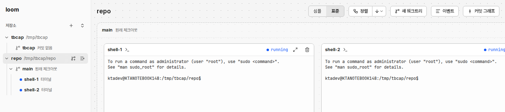
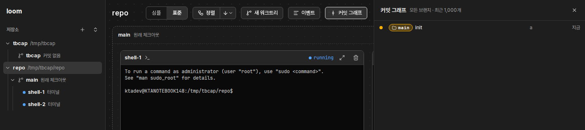

1440 폭, 사이드바 260, 칸 기본 폭에서 찍었다. 칸이 닫히면 단추가 들어간다. 칸을 열면 캔버스가 628px이 되고 단추가 그 폭을 꽉 채운다. 막대는 줄을 바꾸지도, 줄이지도 않는다. 그래서 칸이나 사이드바를 조금 넓히거나 화면을 확대하면 오른쪽 단추가 잘린다(사람이 보낸 캡처의 [커밋 그래프]).
넓은 캔버스(칸 닫힘), 밝은 화면

좁은 캔버스(커밋 그래프 열림), 어두운 화면

잰 폭: 심플·표준 103, 정렬 107, 새 워크트리 104, 이벤트 79, 커밋 그래프 104, 틈 12×5. 저장소 이름까지 628px이다.
종류가 넷이다: 보기 설정(설정 「UI」에도 있다), 정렬 동작과 방향 메뉴, 만들기 동작(사이드바 저장소 줄에도 있다), 칸 열기 둘(칸 머리 [×]로도 닫힌다).
첫 커밋 전에는 「첫 커밋 뒤에 쓸 수 있습니다」 안내가 막대 안에 더 붙어 폭이 더 길다.
[이벤트]·[커밋 그래프]는 한 번에 하나만 열리는데, 따로 떨어진 단추라 그 관계가 보이지 않는다.
2. 안
A. 중복을 지우고 종류별로 묶는다 권장
넓은 캔버스(760), 밝은 화면
repo
정렬심플표준이벤트커밋 그래프
main 원래 체크아웃
좁은 캔버스(커밋 그래프 열림), 어두운 화면
repo
정렬심플표준
main 원래 체크아웃
커밋 그래프
지운다: 막대의 [새 워크트리]와 첫 커밋 안내. 사이드바 저장소 줄의 [새 워크트리]가 같은 창을 연다. 첫 커밋 전에는 그 단추가 꺼지고 툴팁이 이유를 말한다.
남긴다: [정렬]과 방향 메뉴(그래프에서 가장 자주 누른다), 심플·표준(그래프를 보는 방법이라 그래프 옆에 둔다).
묶는다: [이벤트]·[커밋 그래프]를 붙여 한 덩어리로 둔다. 같은 자리를 나눠 쓰는 칸이라는 뜻이 모양으로 보인다. 앞에 세로 구분선을 둔다.
좁을 때: 캔버스가 560px 아래면 칸 단추의 글자를 숨기고 아이콘만 남긴다(컨테이너 쿼리 하나). 이름은 aria-label과 툴팁으로 남는다. 막대 폭: 넓을 때 약 440, 좁을 때 약 315. 지금은 628이다.
키보드: 탭 순서는 왼쪽부터 그대로다. 칸 단추는 aria-pressed와 aria-controls="dock" 그대로, 심플·표준은 라디오 그룹(←→) 그대로다. 새 단축키는 더하지 않는다.
B. 다 남기고 아이콘 막대 하나로 줄인다
넓은 캔버스(760), 툴팁을 띄운 상태
repo
새 워크트리
main 원래 체크아웃
지우는 것 없음. 단추 일곱을 28px 아이콘으로 바꾸고 둥근 막대 하나에 넣는다. 폭 약 255.
좁아도 줄일 것이 없다. 가장 좁은 안이다.
단점: 심플·표준, 정렬, 새 워크트리는 아이콘만으로 뜻을 알기 어렵다. 툴팁을 기다려야 한다. 아이콘 단추 일곱마다 aria-label과 툴팁이 새로 필요하다.
[정렬]과 방향 메뉴가 떨어진 두 아이콘이 되어 「지금 방향으로 정렬」이 보이지 않는다.
C. 종류마다 다른 자리에 둔다
넓은 캔버스(760)
repo
main 원래 체크아웃
정렬심플표준
칸 단추는 캔버스 오른쪽 끝의 세로 줄(VS Code 활동 막대 모양)로, 정렬·보기는 왼쪽 아래로, [새 워크트리]는 사이드바로 간다. 위에는 저장소 이름만 남는다.
위가 비어 카드가 막대에 가리지 않는다.
단점: 새 부품(세로 줄)이 생기고 캔버스가 40px 줄어든다. 단추가 세 곳으로 흩어져 사람이 다시 익혀야 한다. 왼쪽 아래는 끌기·축소 동작과 부딪힌다.
D. 왼쪽 사이드바로 모은다
막대의 단추를 모두 사이드바 위쪽, 「loom」 아래로 옮긴다. 종류마다 머리를 둔다: 「보기」(심플·표준, 정렬과 방향), 「칸」(이벤트, 커밋 그래프). [새 워크트리]는 이미 저장소 줄에 있다. 캔버스 위에는 저장소 이름만 남는다.
사이드바 260, 커밋 그래프 열림
loom
보기
심플표준
정렬
칸
이벤트
커밋 그래프
저장소
repo/tmp/repo
main원래 체크아웃
shell-1터미널
설정
repo
main 원래 체크아웃
커밋 그래프
사이드바 180(가장 좁음), 어두운 화면
loom
보기
심플표준
정렬
칸
이벤트
커밋 그래프
저장소
repo/tmp/repo
main원래 체크아웃
shell-1터미널
설정
repo
main 원래 체크아웃
옮긴다: 심플·표준과 [정렬|방향]은 사이드바 폭을 꽉 채운다. [이벤트]·[커밋 그래프]는 나무 줄과 같은 모양의 줄이고, 연 칸은 고른 줄처럼 칠한다(aria-pressed).
지운다: 그래프 위 막대의 단추 전부와 첫 커밋 안내. 남는 것은 저장소 이름이다.
좁을 때(180): 심플·표준(103)과 정렬(107)은 들어간다. 칸 줄은 글자가 짧아 그대로 들어간다. 잘림은 없다.
단점: 단추가 캔버스에서 멀다. 정렬은 그래프를 보면서 누르는데, 눈과 마우스가 왼쪽 끝까지 간다. 사이드바가 약 170px 길어져 저장소 나무가 그만큼 아래로 밀린다. 사이드바를 접으면 이 단추도 함께 숨으므로, 접힌 줄에 아이콘으로 다시 둬야 한다(부품이 는다). 사이드바는 저장소 여럿의 나무인데, 지금 그래프 하나에만 걸리는 단추가 섞인다.
장점: 캔버스 위가 비어 카드가 가리지 않는다. 단추 자리가 한 곳이다.
A와 D 중 권장은 A다. D의 장점(위가 빔)은 A가 막대를 약 440px로 줄여 대부분 얻는다. D는 단추를 캔버스에서 떼고, 사이드바 접기와 부딪쳐 접힌 줄에 단추를 또 둬야 한다. 사이드바의 분류 기준(저장소 나무)도 섞인다.
3. 비교와 결정할 것
항목
A(권장)
B
C
D
막대 폭(넓음 / 좁음)
약 440 / 315
약 255 / 255
이름만 / 이름만
이름만 / 이름만(사이드바 약 170px 길어짐)
지우는 부품
막대 [새 워크트리], 첫 커밋 안내
없음
막대 [새 워크트리], 첫 커밋 안내
막대 전부
새 부품
칸 단추 묶음 모양, 컨테이너 쿼리 한 줄
아이콘 막대, 툴팁 일곱
세로 줄, 왼쪽 아래 묶음
사이드바 「보기」·「칸」 머리, 칸 줄 둘, 접힌 줄의 아이콘
글자로 뜻이 보임
넓을 때 전부, 좁을 때 칸 단추만 아이콘
없음
칸 단추는 아이콘
전부(사이드바를 접으면 아이콘)
잘림
없음(560 아래에서 줄인다)
없음
없음
없음
캔버스까지 거리
바로 위
바로 위
흩어짐
사이드바 끝
결정 1: 막대 [새 워크트리]를 지울까? 앞 목업 sidebar-crud.html은 「도구 줄 단추는 그대로 둔다」로 정했다. A·C는 이를 뒤집는다. 사이드바 줄 단추는 마우스를 올리거나 포커스가 있어야 보이므로 처음 쓰는 사람은 찾기가 조금 어렵다. 지우지 않으면 A안 막대 폭이 약 110 늘고, 좁을 때 그 단추도 아이콘만 남긴다.
결정 2: 심플·표준은 막대와 설정 「UI」 둘에 있다(2026-10-20 사람 지시로 둘 다 두었다). A는 자주 바꾸는 막대 쪽을 남긴다. 설정 쪽을 지울지는 이번 범위 밖으로 둔다.
결정 3: A와 D 중 무엇을 쓸까? 권장은 A다(위 「A와 D」).
4. 양쪽 칸 접기
지금 왼쪽 사이드바는 접을 수 없다. 오른쪽 칸(이벤트, 커밋 그래프, 심플 보기의 터미널)은 막대 단추를 다시 누르거나 칸 머리 [×]로 닫는다. 닫으면 칸이 아예 없어진다. 두 칸의 폭은 이미 이 브라우저에 남는다(loom.sideWidth, loom.dockWidth). 아래는 A안 막대를 바탕으로 그렸다.
펼침: 접기 단추 자리(테두리 표시)
loom
저장소
repo/tmp/repo
main원래 체크아웃
shell-1터미널
설정
repo
정렬심플표준
main 원래 체크아웃
커밋 그래프
왼쪽: 「loom」 줄 오른쪽 끝에 PanelLeftClose. 툴팁 「사이드바 접기」.
오른쪽: 칸 머리의 [×]를 PanelRightClose로 바꾼다. 동작은 지금 [×]와 같다(칸 닫기). 단추를 하나 더하지 않는다.
왼쪽 접힘: 40px 줄이 남는다
repo
정렬심플표준
main 원래 체크아웃
커밋 그래프
둘 다 접힘, 어두운 화면
repo
정렬심플표준
main 원래 체크아웃
왼쪽 접힘: 40px 줄에 [펴기]와 [설정]만 남는다. 설정은 사이드바 아래에만 있어서 숨기면 갈 길이 없다. 나무는 숨긴다(아이콘으로 나무를 대신할 수 없다).
오른쪽 접힘: 아무것도 남기지 않는다. 막대의 [이벤트]·[커밋 그래프]가 펴기 단추다. 심플 보기의 터미널은 지금처럼 노드를 고르면 다시 열린다. 오른쪽에도 줄을 두면 막대 단추와 같은 일을 하는 부품이 둘이 된다(아래 다른 안).
둘 다 접힘: 캔버스가 창 폭에서 40px만 빠진다.
다른 안: 오른쪽에도 줄을 두고 막대의 칸 단추를 옮긴다
loom
저장소
repo/tmp/repo
main원래 체크아웃
shell-1터미널
repo
정렬심플표준
main 원래 체크아웃
양쪽 모양이 같아진다(VS Code 모양). 막대는 정렬·보기만 남아 더 좁다.
단점: 칸을 쓰지 않을 때도 캔버스가 40px 줄어든다. C안의 세로 줄과 같은 새 부품이다. 권장하지 않는다.
단축키 제안: Ctrl+Shift+[ 왼쪽, Ctrl+Shift+] 오른쪽(마지막에 연 칸). 근거: 터미널이 거의 모든 키를 받는다. loom은 이미 Ctrl+Shift+방향키를 터미널에서 빼서 쓴다(Terminal.tsxnavDirection). 같은 앞쇠를 쓰면 규칙이 하나다. 터미널은 Ctrl+Shift+[와 Ctrl+[(Esc)를 구별하지 못하므로, 사람이 Esc 대신 쓰는 Ctrl+[는 그대로 터미널에 간다. 한글 입력 중에도 맞게 e.code(BracketLeft·BracketRight)를 본다.
쓰지 않는 키: Ctrl+B(VS Code 방식)는 tmux 앞쇠, 셸의 한 글자 뒤로, Claude Code의 백그라운드 실행과 부딪친다. Ctrl+Shift+B는 Chrome 북마크 막대다.
기억: 왼쪽 접힘은 정렬 방향처럼 이 브라우저에 남긴다(localStorage 한 키). 오른쪽은 남기지 않는다. 지금도 새로 열면 닫힌 채로 시작하고, 터미널 칸은 고른 노드가 있어야 열린다.
키보드: 접기 단추는 aria-expanded와 aria-controls를 갖는다. 접으면 포커스를 [펴기]로 옮긴다. 펴면 다시 [접기]로 옮긴다.